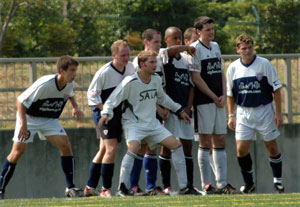
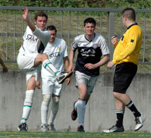
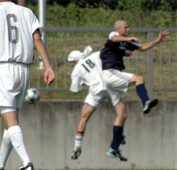
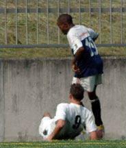

|
OiFuto 2, Sat 9th Sept. Never in his 3 years roaming the left for BFC has the Eggman scrambled a report together but this week he takes a leave from his reign in Muse to share his clichés, cringe-worthy puns and the promised “nobody-shall-be-spared” rant, plus of course his weekly analysis of the current exchange rate for eastern european working girls in the Pongi, this week contrasted to the going rate on Tong-Ren Lu in Shanghai, in the longest BFC match report to date.
 We might as well have one report for the last two games. The new captain delivers his rousing off the cuff “We are the best team on paper” speech and the inspired army goes in looking bright and more eager for balls than a Nairobi nightwalker when the Limeys are in town. They stamp their authority on the game early on with their quality first touch, second touch inevitably crunching tackle, best exemplified by the outgoing captain Doyle. The defense looks airtight for most of the time, and in goal, the Beef is looking surprisingly fresh and alert in his thermosuit, despite record temperatures and humidity. The midfield do their usual disappearing act, sometimes popping up for a good tackle here and a miscued pass there, while the strikers are misfiring worse than a second hand Ak-47 bought off a shady guy called Malik on the Somali border. The goals come from such unlikely sources as a rare bright Sparke or a wise doctor, but nevertheless BFC go into the last 10 mins in the driving seat. Until the now obligatory one minute of madness. Two valuable points pissed down the drain, two weeks in a row!!!!!!
Last week it was against YCAC in Misato. 2-1 up with the advantage of an extra man for almost 20 minutes after a bulky YCAC striker went down in installments to end up in the box, apparently nudged by new signing Sho (the boy weighs half your lunch!!) and almost got away with it, but then he made the grave error of politely pointing out to the ref Pietro that one of the latter’s slick locks was out of line, and of course promptly saw red. Then three defenders and the goalkeeper contrived to let in another soft goal, presenting YCAC with the game on a silver platter 2 minutes from time.
Fast forward one week, identical story, same scoreline. This time after playing Sala FC out of the park on the now playable Oifuto dai 2 for most of the afternoon. And both games involved a certain vocal TML pundit coming over right after the game to give his highly valued opinion of how shit we are, and how worse we could have been; no hard feelings for anything whatsoever, my sources assure me.
The Sala game probably hurt more.
All of the pre-game statistics looked perfect as vice-pre-game-speechman Morson pointed out. Sala had been beaten by newcomers Jets the week before, and spanked 4-1 by BFC in the pre-season. We also had 16 cream of the crop players laboriously chosen after a series of rigorous midweek training sessions (?), and for a major confidence boost, a beleaguered captain after only one game (latest odds for first head to roll in TML are currently 4 to 1. Big Gay Al handling the bets). Oh yes, and Sid in THEIR goal.
To give credit where it’s due, BFC did play some convincing football in the first half. With Phil and Ryo marshalling the line, the in-form James and Jon the biscuit architect moving the ball out of defense well, and the midfield led by the ever industrious Doyle and soon to be newly wed Pabs winning all the loose balls, BFC should have been up 3 or 4 halfway if not for the overly accurate shots (I counted six straight into Sid’s inviting hands, several culprits who need no mention). When the goal did finally come midway through the first half, it was yet another sweeping move with all the strategies executed to the last detail. It started with Beef feeding Ben-the-donkey-leftback’s replacement Jon, with the ball I mean not a carrot. Jon, Better looking than last week, engaged new revelation Terry in a series of elegant one-two footie to walk the ball upfield before Terry picked Evans, falling deep to provide the option in midfield. Evs resisted the usual urge to turn and try to beat his man before losing the ball, this time shielding well then delivering a rare accurate cross-pitch pass to the right to find an open Neil. The Pink one picking up from where he was last sighted a few months ago before going to pick oranges somewhere I didn’t catch, shifted several gears in his paranormal zero to 60 in 4.2 seconds for a 20 fags a day guy, before laying a beautiful Ceska Ulicka (translation Czech alley; a beautifully weighted red sea like defence splitting through pass skillfully threaded through an eye of a needle-esque space) to quality signing Shosuke. The equally speedy midfielder took it in his stride and stepped over to shield the ball from the defender as any quality striker would before lining his shot but was crudely bundled over by the languid Sala defender, leaving the ref with no option but to point to the spot. Ignoring the livid Salalads, which is surprising knowing he is a vegetarian, Dr.Phil arrived on the scene with his bag full of no tricks but plain old trigonometry tables, geometrical instruments and windvanes, among other paraphernalia. With an accuracy surely only taught in a Luftwaffe sniper school (raising brows about his age and his dubious accent), he dispatched the ball with aplomb to the bottom left corner to take his tally of consecutive converted penalties to 26, if anybody is still counting. Did the goalkeeper dive? Sid?
One nil and the promise of more goals.
BFC finished the half strongly without major scares. If the strikers and Doyles had one shooting clinic with our very own UEFA licensed coach Leigh, and BFC played the way they played that first half, then expect some silverware for Gordon’s cabinet this year.
After halftime peptalk peppered with the usual clichés, and several Marlboro Lights Menthols from our sponsors (preferred by 4 of our swiftest frontmen, Pink, Eggman, Day and Sho…Coincidence?), BFC strolled back to continue with the sexy football. Tesco Mark in his swan song for BFC couldn’t put a foot wrong and played his maybe not so sexy but intelligent short passes with Doyle and Pabs to further put BFC in the driving seat while Sho continued to make all sorts of trouble for the Sala backs with his nimble feet and darting runs.
The second goal came early in the second half and once again the move involved the impressive Terry in its infancy and Evs in transition. Despite his unfathomable calls (Go for goal buddy, I got your back…translation; push up mate), and probably looking to impress the posse of cheerleaders he brought, Terry showed why the US air force fly him first class all over the world as a soccer diplomat; a good eye in midfield and providing good cover for the defense when called upon. This time he won the ball cleverly in midfield, took two touches and released the lively Muse King down the right wing. The King took one touch to breeze past his man before drilling a low 20 yard curling cross just beyond the despairing defense. The cross seemed to be too strong for his strike partner Jon Day but speed and determination from the new captain and the ball was still in play. Two touches, he turned beautifully losing one defender and overcoming his instinct to shoot-first-even-with-back-to-goal-ask-no-questions-later, provided a rare assist by cutting it back perfectly onto the path of the onrushing midfielder Taka. The man who surely has more to offer but had been unusually subdued until then wasn’t making any mistakes this time, he looked up, picked his spot, stroked a strong grass cutter from his right instep into the bottom right corner with confidence and style. Did the keeper dive? Sid?
Efficient, selfless, simple two-touch football that the new captain Day is advocating. Two nil and the promise of more goals to come.
A promise not kept as the strikers continued to hit their rich vein of misses despite good work from the midfield. Al overcame his vodka hangover long enough to put in a few minutes confusing the defence a la Crouch but sadly no prolific 11 goals in 14 games coming, while Pabs and the Pink One also contributed several miscued shots. These wasted chances to put the game beyond reach came back to haunt BFC in the last 15 minutes.
Sala, obviously with nothing to lose started throwing all sorts of things like bodies and hopeful long balls upfront just as BFC’s concentration seemed to take a stroll. A bar hit, a post rattled and Jyrki showing those reflexes he learnt hunting reindeers in the North pole to get down fast enough to palm away two clear goals should have rang the alarm bells but alas they went unheard and/or unheeded. Sala’s first goal came after several chances to tackle in midfield and a few more to clear in defense weren’t taken and when the ball finally fell to the Sala striker Roddy, the scribe of Boz fame who hallucinates about such chances 13 hours before the game, there was only one outcome. It was admittedly a delightful shot leaving the impressive Jyrki with no chance but then again he seemed to have had 2 full minutes to line up his shot. 2-1 and…Déjà vu!?
 The profligacy upfront continued, the midfield seemed happy to watch Sala pass the ball around, while organization in the defense crumbled. “We are winning, we don’t need goals! Just keep possession”, the rock solid His name is Ryo screamed but BFC seemed to have lost that earlier eagerness to hold balls. Two minutes to go and again another ball was gifted too cheaply in the midfield. With more time and space than Wilkinson on a conversion, the Sala midfielder took three paces back did that weird Johnny jiggle before picking up his target, one unmarked body out of several options, delivered a good ball to the body’s head that just needed a nod for a share of the points. Sala erupted in elation and rightly so. They had just clawed back from oblivion to level the game with a minute to go.
And BFC seems to be getting a reputation for philanthropy.
“You would have lost the game if not for Jyrki, the post and the bar,” the pundit kindly offered his unsolicited opinion with a surely friendly grin a minute after the last whistle.
Shout;
It was Tesco Mark’s last game after plying his trade in the blue shirt for 4 years. Rarely does BFC see such a hardworking midfielder and a dedicated tackler, probably to “hide his inherent deficiencies on the ball”. The good-humored Scouser also doubled up as access for us mere mortals to occasionally sample the rarefied air of Roppongi hills residence. His testimonial stopped off in his favorite 80’s bar Castillo(which by the way closes its doors the day he leaves Japan) before predictably ending up in that den we hate to love Muse. Perhaps fittingly, since he once famously spent an hour there walking in circles trying to get out (the man’s excuse being it was just after the Great Remake of 2004, for us Muse historians, and they put the main bar, his landmark for navigation in relation to the exit, directly opposite from where it originally was). His speech delivered deep in the belly of Muse may not be remembered for its Cicero like qualities but it was most honest and very well received. He shall be sorely missed both on and off the pitch and we wish him all the best and his girls Aki and Hana back in the tropical delights of London.
Report By: “Roll-your-eyes” Eggman
|